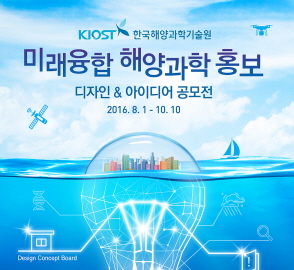
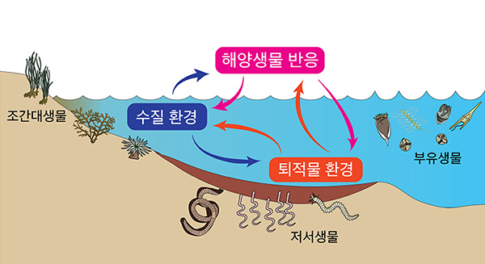

KIOST는 과학기술로 바다를 재창조해 나갑니다.더 안전하고 더 넓게 더 가치있게

미래융합 해양과학을 알려라!
MORE

해양생태계 건강성 평가 관련 국제동향
MORE
서울 면적 5배
망간각 탐사광구 확보
MORE
국내 최초의 학·연 협력 대학원
KIOST 인재 양성 프로그램
MORE
해양과학, 관찰의 시대에서 체험의 시대로
MORE
이전 슬라이드
슬라이드 멈춤
슬라이드 시작
다음 슬라이드